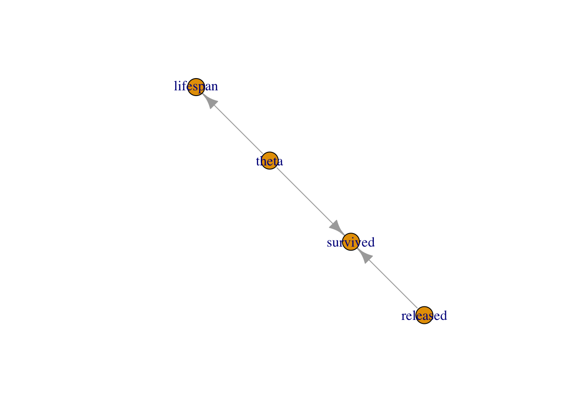

1.3 Getting started
1. Build a model consisting of a likelihood and priors.
2. Read in some data.
3. Specify parameters you want to make inference about.
4. Pick initial values for parameters to be estimated (for each chain).
5. Provide MCMC details namely the number of chains, the length of the burn-in period and the number of iterations following burn-in.
First things first, let’s not forget to load the nimble package:
library(nimble)Note that before you can install nimble like any other R package, Windows users will need to install Rtools, and Mac users will need to install Xcode. More at https://r-nimble.org/download.
Now let’s go back to our example on animal survival from the previous chapter. First step is to build our model by specifying the binomial likelihood and a uniform prior on survival probability theta. We use the nimbleCode() function and wrap code within curly brackets:
model <- nimbleCode({
# likelihood
survived ~ dbinom(theta, released)
# prior
theta ~ dunif(0, 1)
# derived quantity
lifespan <- -1/log(theta)
})You can check that the model R object contains your code:
model
## {
## survived ~ dbinom(theta, released)
## theta ~ dunif(0, 1)
## lifespan <- -1/log(theta)
## }In the code above, survived and released are known, only theta needs to be estimated. The line survived ~ dbinom(theta, released) states that the number of successes or animals that have survived over winter survived is distributed as (that’s the ~) as a binomial with released trials and probability of success or survival theta. Then the line theta ~ dunif(0, 1) assigns a uniform between 0 and 1 as a prior distribution to the survival probability. This is all you need, a likelihood and priors for model parameters, NIMBLE knows the Bayes theorem. The last line lifespan <- - 1/log(theta) calculates a quantity derived from theta, which is the expected lifespan assuming constant survival2.
A few comments:
The most common distributions are available in NIMBLE. Among others, we will use later in the book
dbeta,dmultinomanddnorm. If you cannot find what you need in NIMBLE, you can write your own distribution as illustrated in Section 1.4.It does not matter in what order you write each line of code, NIMBLE uses what is called a declarative language for building models. In brief, you write code that tells NIMBLE what you want to achieve, and not how to get there. In contrast, an imperative language requires that you write what you want your program to do step by step.
You can think of models in NIMBLE as graphs as in Figure 1.2. A graph is made of relations (or edges) that can be of two types. A stochastic relation is signaled by a
~sign and defines a random variable in the model, such assurvivedortheta. A deterministic relation is signaled by a<-sign, likelifespan. Relations define nodes on the left - the children - in terms of other nodes on the right - the parents, and relations are directed edges from parents to children. Such graphs are called directed acyclic graph or DAG.Figure 1.2: Graph of the animal survival model. Survived is a stochastic node defined by its parents
releasedandtheta, whilelifespanis a deterministic node the value of which is defined exactly by the value of its parenttheta.
Second step in our workflow is to read in some data. We use a list in which each component corresponds to a known quantity in the model:
my.data <- list(released = 57, survived = 19)You can proceed with data passed this way, but you should know a little more about how NIMBLE sees data. NIMBLE distinguishes data and constants. Constants are values that do not change, e.g. vectors of known index values or the indices used to define for loops. Data are values that you might want to change, basically anything that only appears on the left of a ~. Declaring relevant values as constants is better for computational efficiency, but it is easy to forget, and fortunately NIMBLE will by itself distinguish data and constants. I will not use the distinction between data and constants in this chapter, but in the next chapters it will become important.
Third step is to tell NIMBLE which nodes in your model you would like to keep track of, in other words the quantities you’d like to do inference about. In our model we want survival theta and lifespan:
parameters.to.save <- c("theta", "lifespan")In general you have many quantities in your model, including some of little interest that are not worth monitoring, and having full control on verbosity will prove handy.
Fourth step is to specify initial values for all model parameters. To make sure that the MCMC algorithm explores the posterior distribution, we start different chains with different parameter values. You can specify initial values for each chain in a list and put them in yet another list:
init1 <- list(theta = 0.1)
init2 <- list(theta = 0.5)
init3 <- list(theta = 0.9)
initial.values <- list(init1, init2, init3)
initial.values
## [[1]]
## [[1]]$theta
## [1] 0.1
##
##
## [[2]]
## [[2]]$theta
## [1] 0.5
##
##
## [[3]]
## [[3]]$theta
## [1] 0.9Alternatively, you can write a simple R function that generates random initial values:
initial.values <- function() list(theta = runif(1,0,1))
initial.values()
## $theta
## [1] 0.8595Firth and last step, you need to tell NIMBLE the number of chains to run, say n.chain, how long the burn-in period should be, say n.burnin, and the number of iterations following the burn-in period to be used for posterior inference. In NIMBLE, you specify the total number of iterations, say n.iter, so that the number of posterior samples per chain is n.iter - n.burnin. NIMBLE also allows discarding samples after burn-in, a procedure known as thinning, which I will not use in this book3.
n.iter <- 5000
n.burnin <- 1000
n.chains <- 3We now have all the ingredients to run model, that is to sample in the posterior distribution of model parameters using MCMC simulations. This is accomplished using function nimbleMCMC():
mcmc.output <- nimbleMCMC(code = model,
data = my.data,
inits = initial.values,
monitors = parameters.to.save,
niter = n.iter,
nburnin = n.burnin,
nchains = n.chains)
## |-------------|-------------|-------------|-------------|
## |-------------------------------------------------------|
## |-------------|-------------|-------------|-------------|
## |-------------------------------------------------------|
## |-------------|-------------|-------------|-------------|
## |-------------------------------------------------------|NIMBLE goes through several steps that we will explain in Section 1.5. Function nimbleMCMC() takes other arguments that you might find useful. For example, you can suppress the progress bar if you find it too depressing when running long simulations with progressBar = FALSE. You can also get a summary of the outputs by specifying summary = TRUE. Check ?nimbleMCMC for more details.
Now let’s inspect what we have in mcmc.output:
str(mcmc.output)
## List of 3
## $ chain1: num [1:4000, 1:2] 1.057 1.057 1.057 1.057 0.908 ...
## ..- attr(*, "dimnames")=List of 2
## .. ..$ : NULL
## .. ..$ : chr [1:2] "lifespan" "theta"
## $ chain2: num [1:4000, 1:2] 0.879 0.879 0.879 0.879 0.879 ...
## ..- attr(*, "dimnames")=List of 2
## .. ..$ : NULL
## .. ..$ : chr [1:2] "lifespan" "theta"
## $ chain3: num [1:4000, 1:2] 1.023 0.884 0.884 0.751 0.751 ...
## ..- attr(*, "dimnames")=List of 2
## .. ..$ : NULL
## .. ..$ : chr [1:2] "lifespan" "theta"The R object mcmc.output is a list with three components, one for each MCMC chain. Let’s have a look to chain1 for example:
dim(mcmc.output$chain1)
## [1] 4000 2
head(mcmc.output$chain1)
## lifespan theta
## [1,] 1.0566 0.3881
## [2,] 1.0566 0.3881
## [3,] 1.0566 0.3881
## [4,] 1.0566 0.3881
## [5,] 0.9085 0.3326
## [6,] 0.9085 0.3326Each component of the list is a matrix. In rows, you have 4000 samples from the posterior distribution of theta, which corresponds to n.iter - n.burnin iterations. In columns, you have the quantities we monitor, theta and lifespan. From there, you can compute the posterior mean of theta:
mean(mcmc.output$chain1[,'theta'])
## [1] 0.3349You can also obtain the 95% credible interval for theta:
quantile(mcmc.output$chain1[,'theta'], probs = c(2.5, 97.5)/100)
## 2.5% 97.5%
## 0.2262 0.4533Let’s visualise the posterior distribution of theta with a histogram:
mcmc.output %>%
as_tibble() %>%
ggplot() +
geom_histogram(aes(x = chain1[,"theta"]), color = "white") +
labs(x = "survival probability")
There are less painful ways of doing posterior inference. In this book, I will use the R package MCMCvis4 to summarise and visualize MCMC outputs, but there are other perfectly valid options out there like ggmcmc5 and basicMCMCplots6. Shall I demonstrate these other options?
Let’s load the package MCMCvis:
library(MCMCvis)To get the most common numerical summaries, the function MCMCsummary() does the job:
MCMCsummary(object = mcmc.output, round = 2)
## mean sd 2.5% 50% 97.5% Rhat n.eff
## lifespan 0.93 0.16 0.67 0.92 1.30 1 2542
## theta 0.34 0.06 0.23 0.34 0.46 1 2580You can use a caterpillar plot to visualise the posterior distributions of theta with MCMCplot():
MCMCplot(object = mcmc.output,
params = 'theta')
The point represents the posterior median, the thick line is the 50% credible interval and the thin line the 95% credible interval.
The trace and posterior density of theta can be obtained with MCMCtrace():
MCMCtrace(object = mcmc.output,
pdf = FALSE, # no export to PDF
ind = TRUE, # separate density lines per chain
params = "theta")
You can also add the diagnostics of convergence we discussed in the previous chapter:
MCMCtrace(object = mcmc.output,
pdf = FALSE,
ind = TRUE,
Rhat = TRUE, # add Rhat
n.eff = TRUE, # add eff sample size
params = "theta")
We calculated lifespan directly in our model with lifespan <- -1/log(theta). But you can also calculate this quantity from outside NIMBLE. This is a nice by-product of using MCMC simulations: you can obtain the posterior distribution of any quantity that is function of your model parameters by applying this function to samples from the posterior distribution of these parameters. In our example, all you need is samples from the posterior distribution of theta, which we pool between the three chains with:
theta_samples <- c(mcmc.output$chain1[,'theta'],
mcmc.output$chain2[,'theta'],
mcmc.output$chain3[,'theta'])To get samples from the posterior distribution of lifespan, we apply the function to calculate lifespan to the samples from the posterior distribution of survival:
lifespan <- -1/log(theta_samples)As usual then, you can calculate the posterior mean and 95% credible interval:
mean(lifespan)
## [1] 0.9338
quantile(lifespan, probs = c(2.5, 97.5)/100)
## 2.5% 97.5%
## 0.674 1.297You can also visualise the posterior distribution of lifespan:
lifespan %>%
as_tibble() %>%
ggplot() +
geom_histogram(aes(x = value), color = "white") +
labs(x = "lifespan")
Now you’re good to go. For convenience I have summarized the steps above in the box below. The NIMBLE workflow provided with nimbleMCMC() allows you to build models and make inference. This is what you can achieve with other software like WinBUGS or JAGS.
NIMBLE workflow:
# model building
model <- nimbleCode({
# likelihood
survived ~ dbinom(theta, released)
# prior
theta ~ dunif(0, 1)
# derived quantity
lifespan <- -1/log(theta)
})
# read in data
my.data <- list(released = 57, survived = 19)
# specify parameters to monitor
parameters.to.save <- c("theta", "lifespan")
# pick initial values
initial.values <- function() list(theta = runif(1,0,1))
# specify MCMC details
n.iter <- 5000
n.burnin <- 1000
n.chains <- 3
# run NIMBLE
mcmc.output <- nimbleMCMC(code = model,
data = my.data,
inits = initial.values,
monitors = parameters.to.save,
niter = n.iter,
nburnin = n.burnin,
nchains = n.chains)
# calculate numerical summaries
MCMCsummary(object = mcmc.output, round = 2)
# visualize parameter posterior distribution
MCMCplot(object = mcmc.output,
params = 'theta')
# check convergence
MCMCtrace(object = mcmc.output,
pdf = FALSE, # no export to PDF
ind = TRUE, # separate density lines per chain
params = "theta")But NIMBLE is more than just another MCMC engine. It provides a programming environment so that you have full control when building models and estimating parameters. NIMBLE allows you to write your own functions and distributions to build models, and to choose alternative MCMC samplers or code new ones. This flexibility often comes with faster convergence.
I have to be honest, learning these improvements over other software takes some reading and experimentation, and it might well be that you do not need to use any of these features. And it’s fine. In the next sections, I cover some of this advanced material. You may skip these sections and go back to this material later if you need it.
Cook LM, Brower LP, Croze HJ (1967) The accuracy of a population estimation from multiple recapture data. J Anim Ecol 36:57–60↩︎
Link, W.A. and Eaton, M.J. (2012), On thinning of chains in MCMC. Methods in Ecology and Evolution, 3: 112-115.↩︎
Fernández-i-Marín, X. (2016). ggmcmc: Analysis of MCMC Samples and Bayesian Inference. Journal of Statistical Software, 70(9), 1–20↩︎
https://cran.r-project.org/web/packages/basicMCMCplots/index.html↩︎